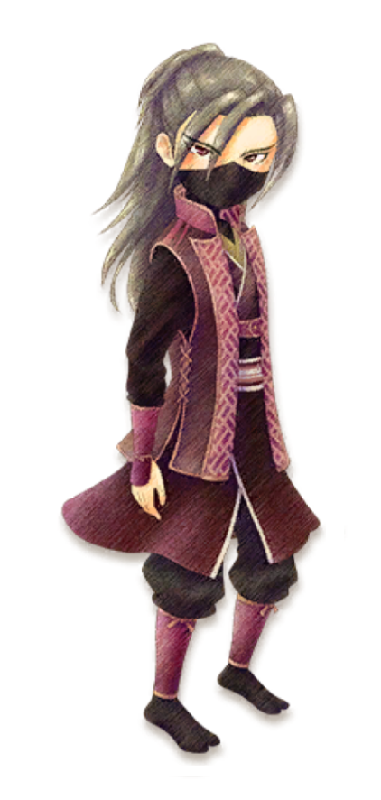

Matsuyuki



"¿Eres consciente de lo que pasará si juegas conmigo?".
Matsuyuki es el unico aldeano como personaje secreto que solamente se puede desbloquear si llegas a casarte con Iori en el juego. Este personaje llega a la Villa Oliva intentando atentar contra la vida de Iori. También es conocido por maullar como un gato y permanece inmóvil junto a la casa de Iori, hablando la mayor parte del tiempo entre paréntesis.
Cumpleaños | 3 de Primavera |
|---|---|
| Familia | En otra ciudad |
| Horario | Martes a Domingo | Matsuyuki empezará su día en Seishin-an (casa de Iori y Dosetsu) de 06:00 - 21:00, para luego desaparecer a partir de las 22:30. |
|---|---|---|
Cualquier día
   |
Matsuyuki no estara disponible porque no se encontrara en la villa Oliva. | |
Nota: Puede conocer mejor sobre los lugares disponibles que hay en el juego y lo puede consultar en la sección de lugares. | ||
Preferencias de regalo
La mejor forma de mejorar la amistad y el afecto con los aldeanos o candidatos a matrimonio es siempre regalarles las cosas que le gusta una vez por día, aqui se mustra los regalos que puedes darle a este personaje.
|
😍
Fasina
|
 Arroz blancococido  Pescado ala plancha  Onigiri |
|---|---|
|
🙂
Encanta
|
 Lirio  Daifuku deartemisa  Relojbrillante |
|
😐
Gusta
|
 Pescadohervido  Botamochi  Monaka decastañas  Arroz concastañas  Kitsuneudon  Arroz conhongo pino  Arroz consetas  Oshiruko  Arroz  Salsa desoja  Daifuku defresa |
| Nota: Todos los regalos que no estan aquí son considerados neutrales para el personaje. | |
Eventos del personaje
Cada evento que ocurra el jugador podrá conecer más sobre el personaje, algunos eventos son partes de la historia del juego y otras son eventos extras que puedes hacer.